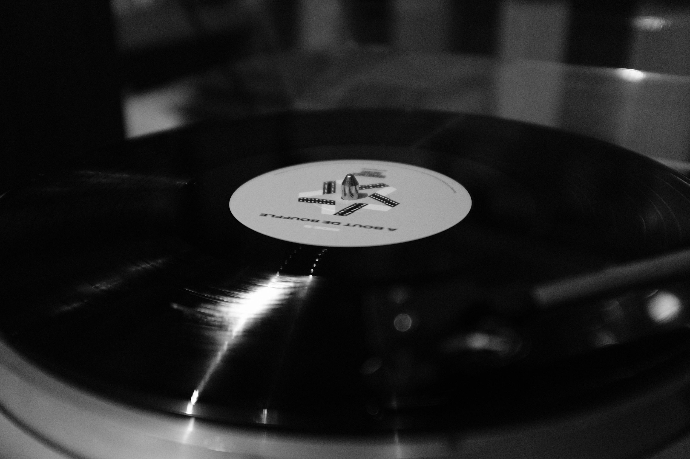
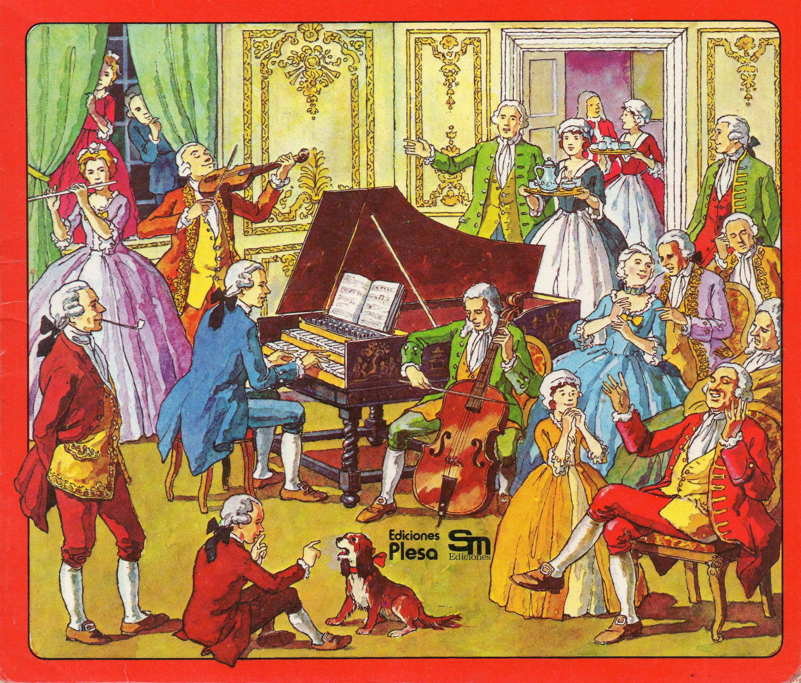

Tus Reproductores Favoritos



Todo comienza con la invención del fonógrafo y
el primer disco de gramófono en la década de 1880. Las primeras empresas discográficas, como
Columbia Records y Victor Talking Machine Company, comenzaron a grabar y vender música a gran
escala. A medida que la tecnología avanzaba, también lo hacían las técnicas de grabación y
producción. En la década de 1950, la llegada del LP (disco de larga duración) revolucionó la
industria, permitiendo a los artistas lanzar álbumes completos en lugar de solo sencillos.
En las décadas siguientes, el crecimiento de la música popular llevó a la creación de sellos especializados en diferentes géneros, como el rock, el pop, el jazz y el hip-hop. Discográficas como Motown, Atlantic Records y RCA Victor se convirtieron en íconos, descubriendo y promoviendo a algunos de los artistas más influyentes de la música contemporánea.....
Las Discográficas
En las décadas siguientes, el crecimiento de la música popular llevó a la creación de sellos especializados en diferentes géneros, como el rock, el pop, el jazz y el hip-hop. Discográficas como Motown, Atlantic Records y RCA Victor se convirtieron en íconos, descubriendo y promoviendo a algunos de los artistas más influyentes de la música contemporánea.....
Seguir Leyendo...

Ha sido parte de la cultura humana desde tiempos inmemoriales. Desde los antiguos
rituales tribales que utilizaban instrumentos rudimentarios hasta la sofisticación de las
orquestas sinfónicas, la música ha evolucionado de maneras fascinantes. En las antiguas
civilizaciones de Egipto y Grecia, la música era tanto una forma de entretenimiento como un
medio de comunicación. Los griegos incluso consideraban la música como una de las artes
liberales, esencial para el desarrollo de la educación.
Con el paso de los siglos, la música se transformó y diversificó en géneros. La música medieval, renacentista y barroca aportaron estructuras y estilos que sentarían las bases para la música clásica. La invención del piano y el desarrollo de la ópera durante el Renacimiento marcaron hitos significativos en la historia musical......
La Música
Con el paso de los siglos, la música se transformó y diversificó en géneros. La música medieval, renacentista y barroca aportaron estructuras y estilos que sentarían las bases para la música clásica. La invención del piano y el desarrollo de la ópera durante el Renacimiento marcaron hitos significativos en la historia musical......
Seguir Leyendo...
Lo Más Escuchado En España
Algunos De Nuestros Artistas Canarios